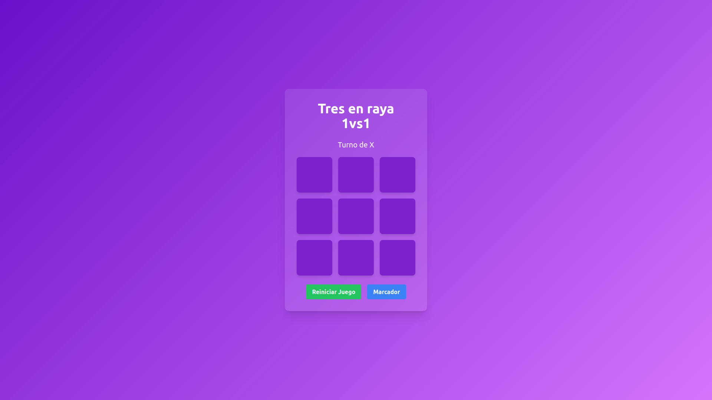

Proyectos

Tres en raya
Juego de Tres en Raya (Tic-Tac-Toe) 1vs1 con marcador. Permite a dos jugadores alternar turnos con 'X' y 'O', mostrando el estado del juego y las victorias.
Tecnologías: HTML, CSS (Tailwind), JavaScript.
Fin de año
Cuenta regresiva dinámica al Año Nuevo con animaciones, cambios mensuales y evento especial a medianoche.
Tecnologías: HTML, CSS (Tailwind), JavaScript.